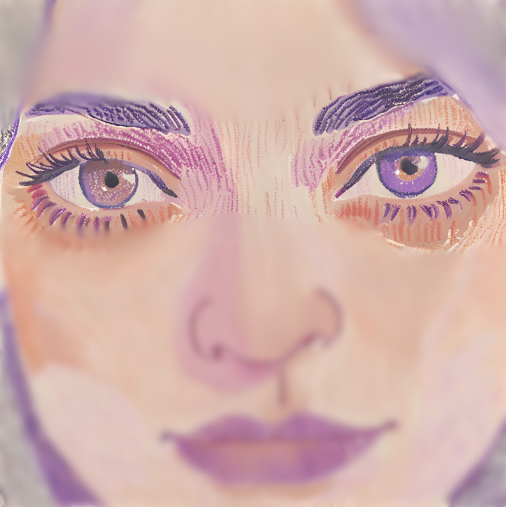

MBTI là gì?
Chỉ số phân loại tính cách Myers-Briggs (MBTI) là một công cụ đánh giá tính cách được sử dụng rộng rãi, phân loại con người thành 16 kiểu tính cách riêng biệt dựa trên bốn cặp đặc điểm đối lập. Việc hiểu rõ kiểu MBTI của bản thân có thể mang lại những góc nhìn hữu ích về xu hướng tự nhiên, điểm mạnh và những khía cạnh bạn có thể phát triển thêm.
Mỗi kiểu MBTI được xác định bởi bốn chữ cái, đại diện cho những khía cạnh khác nhau trong cách bạn nhìn nhận thế giới và đưa ra quyết định. Khi khám phá những chiều hướng tính cách này, bạn sẽ hiểu rõ bản thân hơn và cải thiện được các mối quan hệ với những người xung quanh.
4 yếu tố trong MBTI
E vs I: Bạn lấy năng lượng từ đâu?
Hướng ngoại (E)
Bạn cảm thấy tràn đầy năng lượng khi được giao tiếp, gặp gỡ mọi người và tham gia các hoạt động bên ngoài. Bạn thường nghĩ gì nói đó và thích chia sẻ với thế giới xung quanh.
Hướng nội (I)
Bạn thấy thoải mái khi có không gian riêng để suy nghĩ và nạp lại năng lượng. Thường thì bạn suy nghĩ kỹ trước khi nói và hay tập trung vào cảm nhận, ý tưởng bên trong.
S vs N: Cách bạn tiếp nhận thông tin
Cảm nhận (S)
Bạn chú ý đến những điều cụ thể, rõ ràng và thực tế. Bạn tin vào những gì mình thấy, nghe, chạm – tức là trải nghiệm thật.
Trực giác (N)
Bạn hay để ý đến các ý nghĩa sâu xa, xu hướng và khả năng trong tương lai. Bạn tin vào linh cảm và thích nhìn mọi thứ theo cách tổng thể, kết nối.
T vs F: Khi bạn ra quyết định
Lý trí (T)
Bạn thường cân nhắc lý lẽ, sự hợp lý và khách quan khi quyết định. Với bạn, sự công bằng và rõ ràng là điều quan trọng.
Cảm xúc (F)
Bạn quan tâm đến cảm xúc, giá trị cá nhân và sự hòa hợp giữa mọi người. Bạn muốn quyết định sao cho mọi người cảm thấy được tôn trọng và kết nối với nhau.
J vs P: Bạn tổ chức cuộc sống như thế nào?
Nguyên tắc (J)
Bạn thích mọi thứ rõ ràng, có kế hoạch và đi theo trật tự. Bạn hay đưa ra quyết định sớm và thấy yên tâm khi mọi thứ được sắp xếp gọn gàng.
Ứng biến (P)
Bạn linh hoạt, dễ thích nghi và thích để mọi chuyện diễn ra tự nhiên. Bạn thích khám phá và để ngỏ nhiều lựa chọn trước khi quyết định.

16 Nhóm Tính Cách MBTI
Nhấn vào bất kỳ thẻ tính cách nào bên dưới để tìm hiểu chi tiết về nhóm đó.
Nhóm Nhà Phân Tích (NT)
INTJ – Người kiến tạo
Người tư duy chiến lược, sáng tạo và luôn có kế hoạch cho mọi thứ.
INTP – Nhà tư duy
Những bộ óc phát minh, tò mò vô tận và luôn khao khát tri thức.
ENTJ – Người chỉ huy
Nhà lãnh đạo táo bạo, quyết đoán, có tầm nhìn và biết cách thực hiện.
ENTP – Người đàm phán
Người suy nghĩ nhanh nhạy, thích khám phá và tranh luận trí tuệ.
Nhóm Nhà Ngoại Giao (NF)
INFJ – Người cố vấn
Người trầm lặng nhưng có tầm nhìn sâu sắc và giá trị sống mạnh mẽ.
INFP – Người hòa giải
Người giàu lòng trắc ẩn, sống theo lý tưởng và luôn hướng thiện.
ENFJ – Người hướng dẫn
Lãnh đạo đầy cảm hứng, luôn giúp người khác phát triển tiềm năng.
ENFP – Người truyền cảm hứng
Nhiệt huyết, sáng tạo và luôn nhìn thấy cơ hội ở mọi nơi.
Nhóm Người quan tâm (SJ)
ISTJ – Nhà suy luận
Thực tế, tỉ mỉ và coi trọng sự truyền thống và đáng tin cậy.
ISFJ – Người bảo vệ
Ân cần, tận tụy và luôn âm thầm chăm sóc những người xung quanh.
ESTJ – Người điều hành
Người tổ chức hiệu quả, thích áp dụng giải pháp rõ ràng và có cấu trúc.
ESFJ – Người lãnh sự
Người hòa đồng, giàu tình cảm, luôn tạo ra sự gắn kết cho cộng đồng.
Nhóm nhà thám hiểm (SP)
ISTP – Nghệ sĩ bậc thầy
Người giải quyết vấn đề thực tế, giỏi kỹ thuật và tay nghề cao.
ISFP – Nhà phiêu Lưu
Người nghệ sĩ nhẹ nhàng, sống theo cảm nhận và giá trị cá nhân.
ESTP – Người doanh nhân
Tràn đầy năng lượng, yêu thích thử thách và giỏi xử lý tình huống.
ESFP – Người trình diễn
Người vui vẻ, thích hoạt náo và luôn mang lại niềm vui cho mọi người.